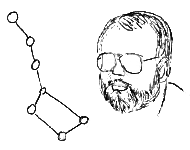

|

|
Pitt Crandlemire
The
Big
Dipper
|
Clowns to the Left of Me, Jokers to the Right...
(with apologies to Stealer's Wheel)
This issue: a discussion of the Shift variants, Shift-Left and Shift-Right.
The judge's info.shift file describes these variants as follows:
The Shift-Right and Shift-Left variants of Diplomacy follow the same rules
as normal Diplomacy; the only difference is
in the starting positions of the powers. The concept is simple: everyone
begins the game with their units occupying the home centers of another power.
This sounds simple, but it makes for a very interesting variant, to say the least.
Each Great Power starts with the same number and type of units that the
country they are occupying would normally start with; thus, in Shift-Right,
Austria starts in England and has F Edi, F Lon, and A Lvp,
just as England
normally would. The crucial difference, however, is that Edi, Lon,
and Lvp
are still English home supply centers, not Austrian ones.
Austria's home
supply centers are still Vie, Tri, and Bud.
If Austria ever wants to build a unit, he must capture his home SC's.
Therein lies the rub. Each player must migrate from his starting
point to his home SC's, must arrive at those SC's still in possession of
enough in-transit SC's to keep the units he started with, and do so in a
timely manner if he hopes to have any chance of winning the game. Thus, the
key issues become distance and migratory path to one's home SC's.
As the info.shift file can tell you, the starting positions for Shift-Right
and Shift-Left Diplomacy are as depicted in the table below.
| In Shift-Right Diplomacy...
|
|---|
| The units owned by this country...
| Begin the game in this country... |
|---|
| Germany | Turkey |
| Turkey | Germany |
| England | Italy |
| Italy | Russia |
| Russia | France |
| France | Austria |
| Austria | England |
| The home centers of this country...
| Are initially occupied by this country... |
|---|
| ...in Shift-Left Diplomacy
|
|---|
As the table shows, Shift-Left Diplomacy shifts everyone in the opposite direction
than does Shift-Right (Germany and Turkey still just trade).
A quick review of the starting board positions suggests that several powers
have particular advantages due to their starting positions. Here's an
examination of each power's starting position in Shift-Left based on their
possible avenues for getting home. These are evaluated by distance,
SC availabilty, and the possibility of conflict (this analysis works equally well
for Shift-Right; simply swap the powers):
- Germany
(starting in Turkey with F Ank, A Con, A Smy)
-
- via Russia - distance: fair, SC's: fair, conflict: low
- via Balkans/Austria - distance - poor, SC's: good, conflict: high
- Turkey
(starting in Germany with F Kie, A Mun, A Ber)
-
- via Russia - distance: fair, SC's: fair, conflict: low
- via Balkans/Austria - distance - poor, SC's: good, conflict: low
- Italy
(starting in England with F Edi, A Lvp, F Lon)
-
- via France - distance: fair, SC's: fair, conflict: low
- via Atlantic - distance: good, SC's: fair, conflict: low
- Russia
(starting in Italy with A Ven, A Rom, F Nap)
-
- via Austria/Balkans - distance: fair, SC's: good, conflict: high
- via Balkans/Turkey - distance: poor, SC's: good, conflict: average
- France
(starting in Russia with F Sev, A Mos,
A War, F Stp/sc)
-
- via Germany - distance: good, SC's: fair, conflict: average
- via Scandinavia - distance: fair, SC's fair, conflict: low
- Austria
(starting in France with F Bre, A Par, A Mar)
-
- via Germany - distance: fair, SC's: fair, conflict: average
- via Italy - distance: fair, SC's: poor, conflict: low
- England
(starting in Austria with A Bud, A Vie, F Tri)
-
- via Germany - distance: poor, SC's: fair, conflict: average
- via Italy/France - distance: horrible, SC's: fair, conflict: average
- via Mediterranean/Atlantic - distance: poor, SC's: fair, conflict: low
Add to this mix a few special factors:
- Any power electing to move by land through Italy is going to be subject to
the Pie/Ven/Tyr bottleneck and also be forced
to go off the most direct
route to their home SC's in order to pick up in-transit Italian SC's.
- Any power electing to move through the Balkans and Austria is in dire need
of a traffic cop since at least 4 powers could move through there and one
power (Austria) must move to there.
- Most of the starting fleets have no chance of getting to their owner's
home SC's; Germany's F Ank, France's F Sev, and Turkey's
F Kie are just too far away; Russia's F Nap and England's
F Tri face a lot of traffic with little chance of support. As a
result, these units are probably only useful to harass the other
powers or usually end up as early write-offs.
- On the other hand, England must get one of his fleets near
home if he's ever going to take any home SC's, so he has to
try and find some way to get F Tri home.
- Austria starts out in pretty good shape but is likely to end up in big
trouble the closer he gets to home; this is one variant where being centrally
located just doesn't pay.
In discussing the likelihood of success for each power, I would rank the powers
in Shift-Left in the following order:
- France, Germany, Turkey
- All have good starting positions and a decent chance to get home
early without losing units (a slight edge goes to France because
of the extra starting unit).
- Italy
- A good starting position and a quick journey home; Italy's only problems
are that he's almost guaranteed to tangle with England on the
way and that Austria will probably still be sitting in Venice trying to
get into Austria. On the other hand, once he gets home, Italy will
probably still be holding a few English SC's so he will build
quickly.
- Austria
- Good starting position and a fairly easy path home but, boy oh
boy, once he gets there, he's in big trouble. If Russia hasn't
cleared the area yet or if France, Germany, or Turkey decided
to go through, Austria is going to end up sitting on his own
doorstep with no way in.
- Russia
- Looks good until you realize he's going to have to deal with
France, Germany, and Turkey (either in Austria/Balkans or in
Russia) and meanwhile, Austria's going to be breathing down his
neck.
- England
- You're kidding, right? England has virtually no chance in this variant;
he's got the longest trip home, all of his possible paths put him squarely
in conflict with another power, and -- to add insult to injury -- he has to be
sure that his single fleet gets through to his island nation
or else his home SC's will just sit there belonging to Italy. (Or he could
convince other powers to become able and willing to convoy the English armies
home...fat chance of that!)
Regardless of which power you are assigned in a Shift variant game, the key
issue during the opening game is to lose as few units as possible while
getting from the start to your home SC's. Ideally, you would lose none and pick
up one or two extra along the way, so that you can build quickly once you
take your home SC's. Assuming you survive the opening game (what? no
England left?), the mid-game and end-game play out pretty much the same
as in standard Diplomacy.
Ultimately, I don't think the variant is very well balanced. If you get
England in either Shift-Right or Shift-Left, your work is cut out for you.
On the other hand, if you overlook the distinct disadvantage that England
has (and this could actually be ameliorated somewhat in Shift-Right by giving
England two fleets to start), the variant is quite enjoyable. In the early
going, you find yourself playing with a sort of "slash and burn" or "loot
and run" mentality. You know that you have no chance of keeping the SC's
you start with, so you plan strategy to grab new ones even as you plan how,
which, and to whom you will lose your old ones. I had the sense of being a
medieval mercenary warlord roaming and ravaging the coutryside. Once you
get to your home SC's, the game takes on a bit of the flavor of the 1898
variant as you rush to occupy all your home SC's and build the units of
your choice faster than your opponents.
All in all, I highly recommend the variant. If you'd like to check a game
out, grab a HISTORY of game twist on
the USTO judge.
And, if you're interested in playing in a game, drop me a line and I'll
start one (or more) if there's sufficient interest.
'Til next time (whenever and wherever that might be), I am,
Pitt Crandlemire
The Big Dipper
(pittc@syncon.com)
If you wish to e-mail feedback on this article to the author, and clicking
on the mail address above does not work for you, feel free to use the
"Dear DP..." mail interface.